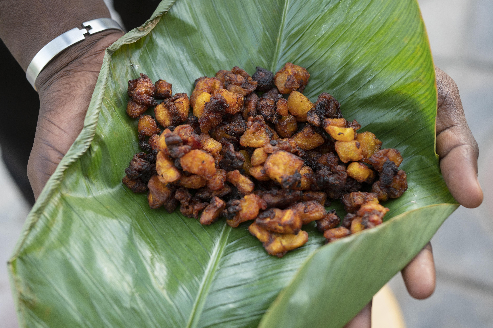

Kelewele

Description
This is a recipe on how to prepare kelewele the Ghanaian student way.
Ingredients
- Ginger
- Hot pepper
- 1 pinch salt
- 1 cup of oil
- 5 ripe plantains
Steps
- Get a sharp knife, cut a shallow line down the length of the plantain and peel back the skin.
- Chop the plantain into small cubes of about 1 inch size.
- Grate the ginger into a large bowl then add in chopped garlic and chopped onions. Blend them together.
- Now in the bow add the blend, add cayenne pepper, anise seed, nutmeg and salt. Mix well.
- Next add in your plantain cubes and toss to coat in the spice mix.
- Leave to rest for 30 minutes. In a deep skillet, add enough oil to slightly submerge the plantains to fry them well.
- Separate the plantain into batches so that each lot can fry without touching one another. This is crucial to achieving the right texture.
- Now for each batch, add into the skillet to brown, turning once during the process. It should take about 5 minutes per batch.
- Use a strainer ladle to remove the plantains from the pan and rest on a plate covered with paper towels.
- Lightly dab the plantains with paper towels to soak up any excess oil and serve immediately.
Home